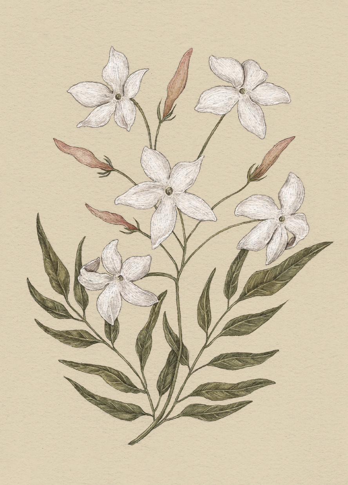

Plate JASMINE
The Language of Flowers
Jasmine Study

Jasmine
Jasminum
Definition: A flower associated in floriography with amiability and cheerfulness.
Meaning
- Amiability
- Cheerfulness
Origin
Jasmine's light and lovely scent, along with its elegantly shaped blooms, perfectly convey amiability
and cheerfulness. It is often used in weddings and celebrations, especially in the Philippines,
Pakistan, and Indonesia, where it is a native plant.
Pair With
- Iris to show admiration for a friend's strength of character
- Crocus for a kind and generous loved one, or one with a particular zest for life